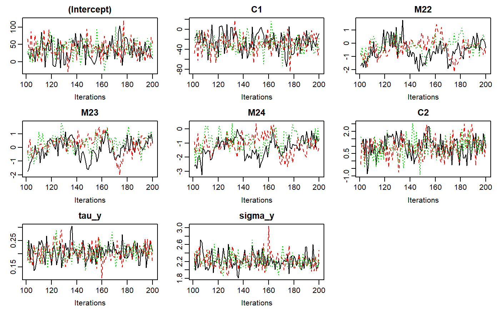
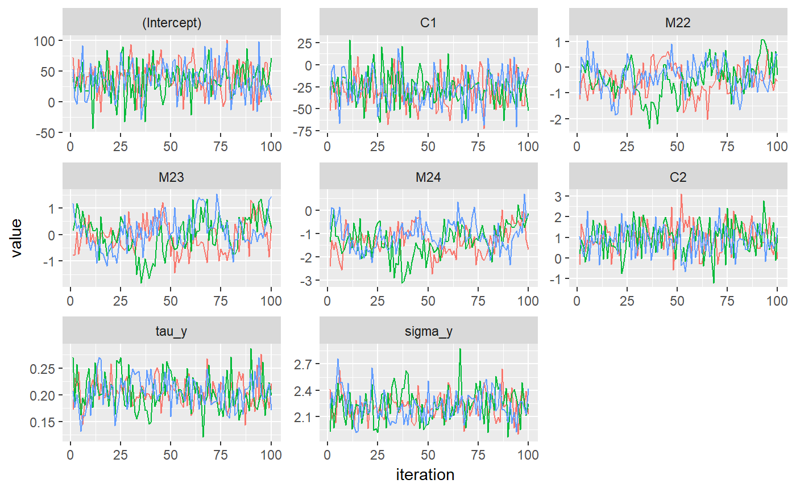

Traceplot of a JointAI model
traceplot.RdCreates a set of traceplots from the MCMC sample of an object of class "JointAI".
traceplot(object, ...) # S3 method for mcmc.list traceplot(object, start = NULL, end = NULL, thin = NULL, ...) # S3 method for JointAI traceplot(object, start = NULL, end = NULL, thin = NULL, subset = c(analysis_main = TRUE), nrow = NULL, ncol = NULL, keep_aux = FALSE, use_ggplot = FALSE, warn = TRUE, mess = TRUE, ...)
Arguments
| object | object inheriting from class 'JointAI' |
|---|---|
| ... | Arguments passed on to
|
| start | the first iteration of interest (see |
| end | the last iteration of interest (see |
| thin | thinning interval (see |
| subset | subset of parameters/variables/nodes (columns in the MCMC sample).
Uses the same logic as the argument |
| nrow | optional number of rows and columns in the plot layout; automatically chosen if unspecified |
| ncol | optional number of rows and columns in the plot layout; automatically chosen if unspecified |
| keep_aux | logical; Should constant effects of auxiliary variables be kept in the output? |
| use_ggplot | logical; Should ggplot be used instead of the base graphics? |
| warn | logical; should warnings be given? Default is
|
| mess | logical; should messages be given? Default is
|
See also
summary.JointAI, lme_imp, glm_imp,
lm_imp, densplot
The vignette Parameter Selection
contains some examples how to specify the parameter subset.
Examples
#># Example 1: simple traceplot traceplot(mod)# Example 2: ggplot version of traceplot traceplot(mod, use_ggplot = TRUE)# Example 5: changing how the ggplot version looks (using standard ggplot syntax) library(ggplot2) traceplot(mod, use_ggplot = TRUE) + theme(legend.position = 'botto') + xlab('iteration') + ylab('value') + scale_color_discrete(name = 'chain')